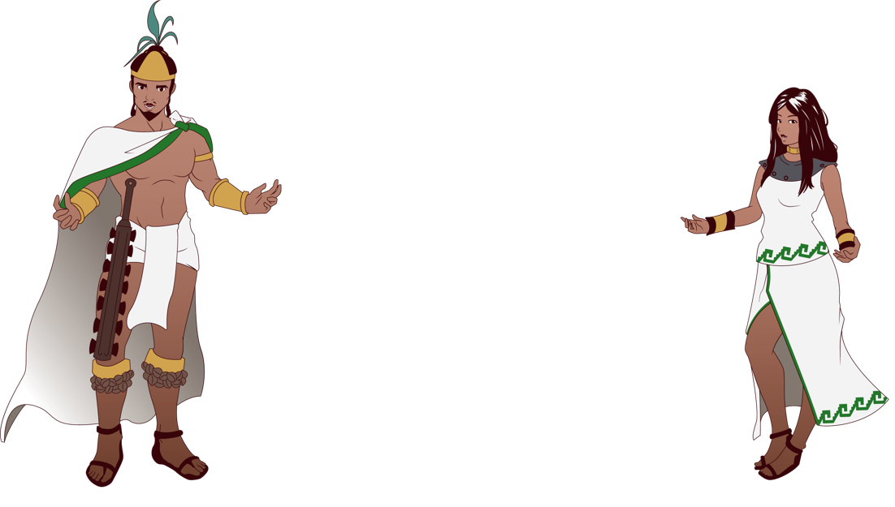
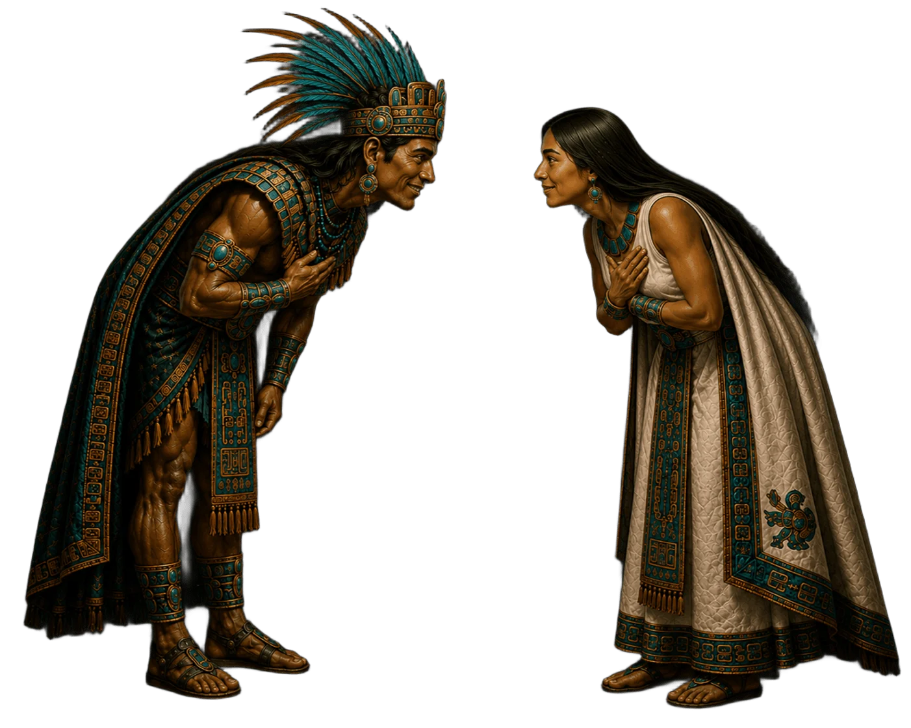
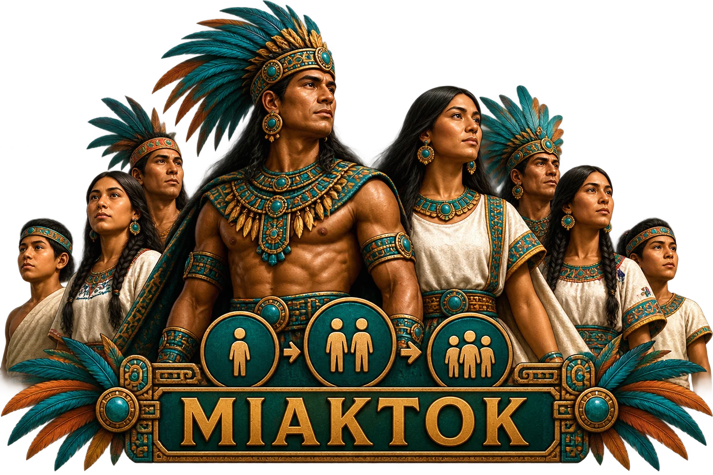
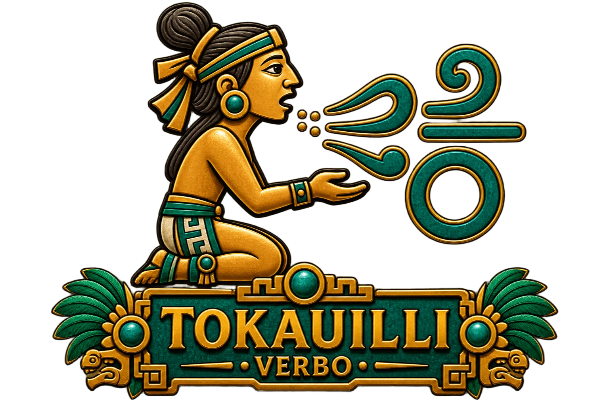
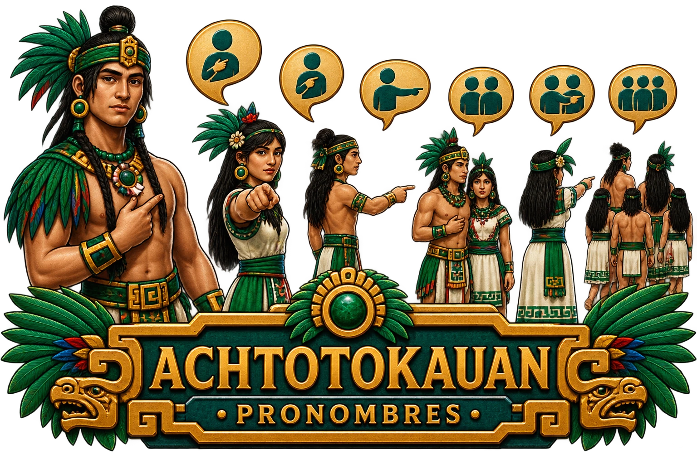
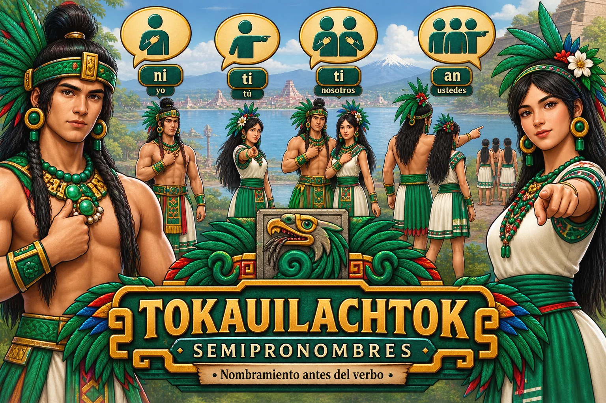

NÁHUATL PATRIMONIAL
Estructura de la expresión
Apartados 1–14 del documento.
1. tlahtolmachiyotl — Enseñanza de la palabra



(Convención de escritura para la Lengua
Náhuatl)
a, e, h (sonido exhalado o "j" suave), i, k, l, m, n, o, p, t, u,
x, y, z, ch, ll, tl, tz
Desglose etimológico de “aztekatl”:
• aztli = Instrumento, utensilio, arma,
salvoconducto, Etc. (pierde terminación
sustantival al estructurarse)
• -te- = Referente de “alguien” (viene de teitl)
• -katl = Morfema derivativo nominal identitario; es
decir, un marcador existencial por adscripción
estructural.
Desglose etimológico de “mexihkatl”:
• metl = maguey (pierde terminación -tl)
• xihtli = centro, origen, ombligo (pierde -tli)
• katl = morfema derivativo nominal identitario; es
decir, un marcador existencial por adscripción
estructural.
ueyik teokalli = Gran refugio de energía
2. tlahtolyotl — Estructuración de la expresión
• achtotlahtolyotl (prefijación de la palabra) +
tlahtolnelhuayotl (raíz de la palabra) +
tlahtoltlamiyotl (terminación de la palabra)
• tokachiuayotl = Función Sustantival:
Nominación, designación, estipulación
• temiyouan = terminaciones
IMPORTANTE: La terminación en Náhuatl define el
estado estructural del referente. La raíz aporta la idea
base, mientras que la terminación define el estado
estructural del referente.
Por ello, una misma raíz puede generar sustantivos
distintos y plenamente independientes al combinarse
con diferentes terminaciones. Estas formas no deben
entenderse como variaciones del mismo sustantivo, sino
como derivaciones categoriales diferenciadas, ya
que la terminación indica cómo se concibe
estructuralmente el referente, y no qué es según
categorías occidentales.
Resumen funcional de las terminaciones:
• -tl → raíz + terminación vocálica
• -itl → raíz + terminación glotal
• -tli → raíz + terminación consonántica
• -li → raíz + terminación lingual
Terminación vocálica
• tokatl = araña
• yolotl = corazón
Terminación glotal definida por su rol o función:
• alitl = varón
• maitl = mano
• tokaitl = nombre / siembra
Terminación consonántica:
• yolohtli = corazón
Terminación lingual definida por fijación conceptual:
• uitzilli = colibrí
• malli = curva
• tonalli = Sol
• kalli = refugio
• tzakualli = edificación prehispánica cerrada
• temazkalli = refugio instrumental completante de piedra
3. ititiliztli — Artículo
Dentro del análisis gramatical, "in" cumple la función
de artículo cuando aparece antes del sustantivo.
Esto ocurre específicamente cuando el sustantivo
termina en:
• -tl → raíz + terminación vocálica
• -itl → raíz + terminación glotal
Ejemplos:
• in tokatl = la araña / el arácnido
• in tokaitl = el nombre / la siembra
• in tlaitl = la cosa / el objeto / la algo (sólo para
enfatizar la significación)
• in tetl = la piedra / la roca
• in tlaitl = la cosa / el objeto / el algo / la algo (sólo
para enfatizar la significación)
• in teitl = la persona / el alguien
• in yolotl = el corazón
• yolohin = el corazón
En la expresión previa, "in" deja de aparecer como
prefijo y se convierte en sufijo, fusionándose con la raíz
para formar la palabra completa. Esto ocurre
específicamente cuando el sustantivo termina en:
• -tli → raíz + terminación consonántica
• -li → raíz + terminación lingual
En estos casos: El artículo "in" se vuelve
terminación fusionándose con el sustantivo.
Ejemplos:
• eztli = sangre (pierde -tli y queda: ezin = la
sangre)
• kalli = refugio (pierde -li y queda: kalin = el
refugio)
• olli = movimiento (pierde -li y queda: olin = el
movimiento)
• yolohtli = corazón (pierde -tli y queda: yolohin =
el corazón)
• uitzilli = uitzilli (pierde -li y queda: uitzilin = el
colibrí)
• in yolotl / yolohin = el corazón
• tlalnamikiliztli = pensamiento -encontrar tierra-
(tlalnamikilizin = el pensamiento)
• ilnamikiliztli / ilnamikiyotl = recordatorio -
encontrar el decir-(ilnamikilizin = el recuerdo / el
recordatorio)
Obsérvese "-iztli" y "-yotl"; ambos refieren términos
abstractos.
4. tokatilanachiuayotl — Función adjetival y/o adverbial
• -k
• -tik
• -te- es un referente relacional que, según su
origen contextual (teitl), puede denotar persona
o alguien, marcando presencia humana no
especificada.
• -tla- es un referente relacional no humano que
puede denotar algo o abundancia, derivado de
tlantli (diente), donde la noción de multiplicidad
da lugar a lecturas colectivas o de
concentración.
Ejemplos:
• tzinchiltik = rojo bajo / rojo suave
• chiltik = rojo
• chichiltik = rojo intenso
• laxtik = anaranjado
• tzinkoztik = amarillo suave / amarillo bajo
• koztik = amarillo
• kokoztik = amarillo intenso
• tzinxohtik = verde suave / verde / bajo
• xohtik = verde
• xoxohtik = verde intenso
• tzinxiuhtik = azul bajo / azul suave
• xiuhtik = azul
• xixiuhtik = azul intenso
• tzinkamohtik = lila
• kamohtik = morado / púrpura
• kakamohtik = morado intenso
• iztak petahtik = plateado
• koztik petahtik = dorado
• tlapaltik = rosa / colorido
• tlaltik = café / terracota
• nextik = gris / arenoso
• tliltik = negro
Ihuanik! = ¡Importante!
• onzezeltlahtolyotl = Recategorización
gramatical:
• = achtotoka + tokaitl + ontokatilana + tokatilana
+ tokauilli
• = prefijo + sustantivo + adverbio + adjetivo +
verbo
5. tlaltokatin / tlaltokauan — Toponímicos / Adverbializaciones
• ”-pan” viene de pantli = sobre puesto, sobre
colocado, Etc. También se usa “-pa”.
• “-ko” viene de komitl = vasija / caso / jarrón /
recipiente, Etc. También se usa “-k”.
• “-kan” viene de kanin = dónde / donde. También
se usa “-ka”.
• “-tlan” viene de tlantli = diente. También se usa
“-tla”, “-lan” y “-la”.
• “-man” viene de mantli = instancia, momento,
Etc. También se usa “-ma”.
• “-yan” viene de yankuik = nuevo. También se
usa “-ya”.
Expresión = Modificadores + Sustantivo + Verbo +
Terminación de la palabra
Ejemplos:
• olli = movimiento
• ihtoa = decir / expresar
• tla- = referente de "algo"SIEMPRE REFIERE.
NO SIEMPRE TRADUCE.
• -pan = sobre / mente
Así: tlahtolpan = expresamente / idiomáticamente
6. tlahtolhuayotl — Pertenencia en la expresión
• -ua-
• ua = poseer / pertenecer / controlar / dominar /
contener
• -axka-
• axkauh = propio
7. tlahtoluiyotl — Desplazamiento en la expresión
• -ui- (indica progresión)
• yaui = ir
• uala = venir
Ejemplos:
• teua = poseer (a/de alguien)
• tlaua = poseer (a/de algo)
• tetlaua = poseer (algo de alguien)
Importante: En estructuraciones verbales suele perderse
la última "a" o "i". Ejemplo:
• tlauizkalpantekuhtli
• tla+u+iz+kal+pan+te+ku+h+tli
En la estructuración anterior se perdió la “i” de
“kui” y tomó el sonido “h” exhalado para
concatenar.
8. tlahtolmekauhyotl — Esencia que conecta la expresión
• -h- (sonido exhalado)
• -uh- (también exhalado)
• -hu- (también exhalado)
Ejemplos:
• nelhuayotl = raíz
• tekuhtli = regente
9. tzinyotok — Reverenciante

• -tzin- (partícula respetuosa o reverencial)
zitlalkatzin (Resp. Oriundo de estrellas) y ziuayotzin
(Resp. feminidad)
10. miaktok — Pluralizante

• -meh- (genérico)
• -tin- (respetuoso)
• -uan- (de pertenencia)
11. tokauilli — Verbo

Todos los verbos terminan en vocal, pueden o no ser
antecedidos por las partículas:
• te- (referente de alguien)
• tla- (referente de algo)
• tetla- (referente de algo de alguien)
Y también pueden adverbializarse por los sufijos:
• -kan, -ka (denota dónde / donde)
• -ko, -k (denota resguardo)
• -tlan, -tla, -la (denota abundancia)
• -pan, -pa (denota sobre)
• -yan, -ya (denota nuevo)
• -man, -ma (denota tiempo)
Hay una lista de verbos antes de la bibliografía.
12. achtotokauan — Pronombres

• nehuatl / nehua / neh = yo
• tehuatl / tehua / teh = tú
• yehuatl / yehua / yeh = él / ella
• tehuantin / tehuan = nosotros(as)
• anmehuantin / anmehuan = ustedes
• yehuantin / yehuan = ellos(as)
13. tokauilachtok — Semipronombres (Nombramiento antes del verbo)

• ni- (prefijo 1er persona singular)
• ti- (prefijo 2a persona singular)
• Ø- (prefijo 3er persona singular)
• ti- (prefijo 1er persona plural)
• an- (prefijo 2a persona plural)
• Ø- (prefijo 3er persona plural)
NOTA: "Ø" indica ausencia o inexistencia; es decir, el
verbo va sólo sin prefijo personal, su ausencia indica 3a
persona ya sea del singular o del plural.
14. tetlatokayouan — Referentes (Siempre refiere, no siempre significa)
• -te- Refiere a alguien
• -tla- Refiere a algo
• -tetla- Rrefiere algo de alguien